Sebastian Raschka 把近年主流开源权重大模型里真正在用的注意力变体做了一次系统梳理：从最经典的多头注意力（MHA），到分组查询注意力（GQA）、多头潜在注意力（MLA），再到滑动窗口、DeepSeek稀疏注意力，以及最新的混合架构。
这篇文章把每条技术线都配了可视化模型卡与对比图，既可作为参考资料，也可当作轻量学习材料。下面按原文脉络逐节拆解。
自注意力让序列中每个token都能查看其他可见token、给它们分配权重，并据此构建一个新的、带上下文表示的输入表征。
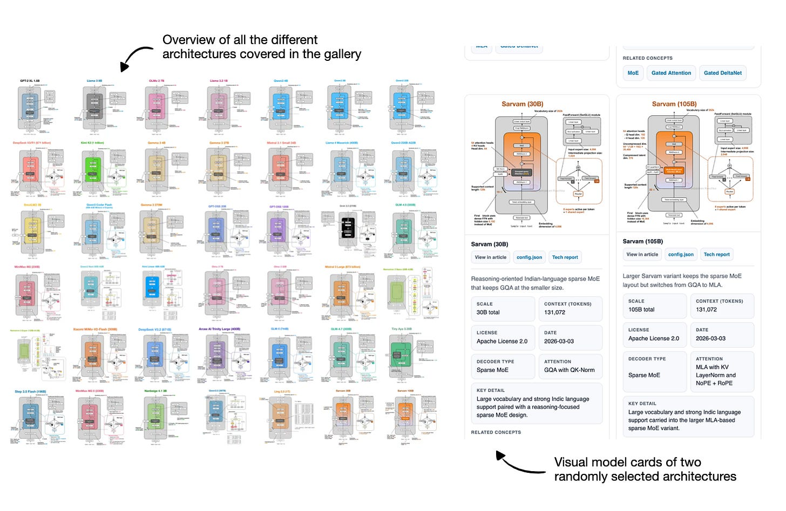
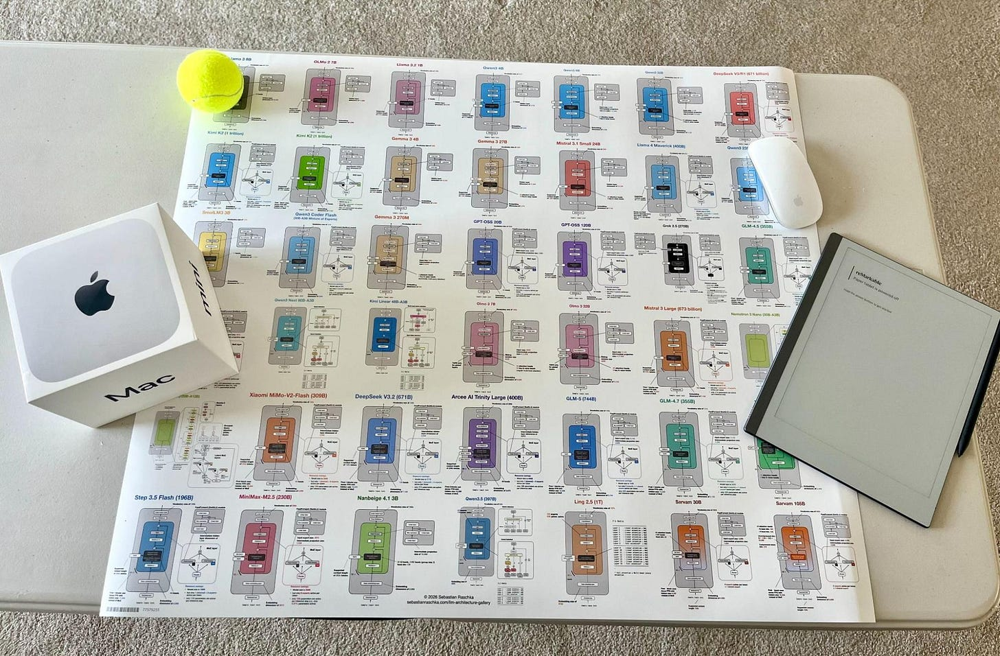
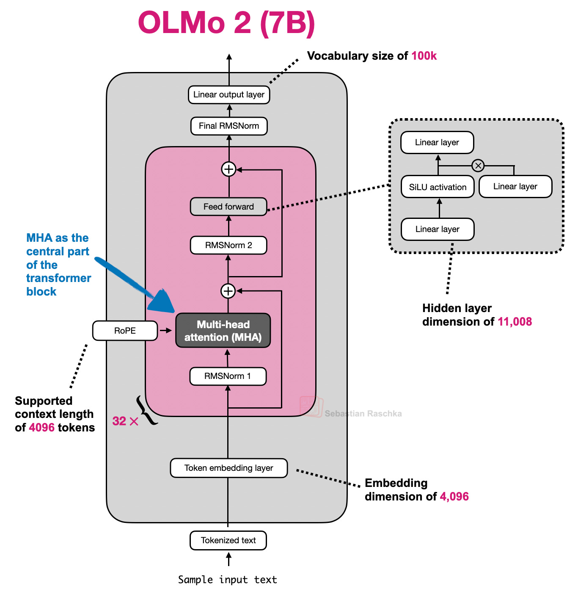
多头注意力（MHA）是这一思想的经典Transformer实现：它用不同的可学习投影并行运行多个自注意力头，再把它们的输出合并成一个更丰富的表示。
下面的内容先用一个快速概览铺陈MHA的背景，为后面分组查询注意力、滑动窗口注意力等概念做铺垫。如果你想要更细致的自注意力讲解，Raschka 另有长篇专文。
注意力的出现早于Transformer和MHA，其直接背景是用于翻译的编码器-解码器RNN。
在那些老系统中，编码器RNN逐token读入源句并压缩成一串隐藏状态（最简版本里就是压缩成一个最终状态），然后解码器RNN只能从这个有限的摘要生成目标句。短句简单场景还能用，但一旦下一个输出词所需的相关信息藏在输入句别处，就会形成明显瓶颈。
翻译示例揭示了这种思路的局限：一句译文可以保留许多局部合理的选词，却仍因模型把问题当成逐词映射而整体失败。现实中正确下一个词取决于句子级结构以及此刻哪些 earlier source words 更重要——RNN用有限隐藏状态存不下这么多信息。
Transformer保留了「注意力改造版RNN」的核心思想，但去掉了循环。在经典的《Attention Is All You Need》中，注意力本身成了主要的序列处理机制（而不只是RNN编解码器的一部分）。
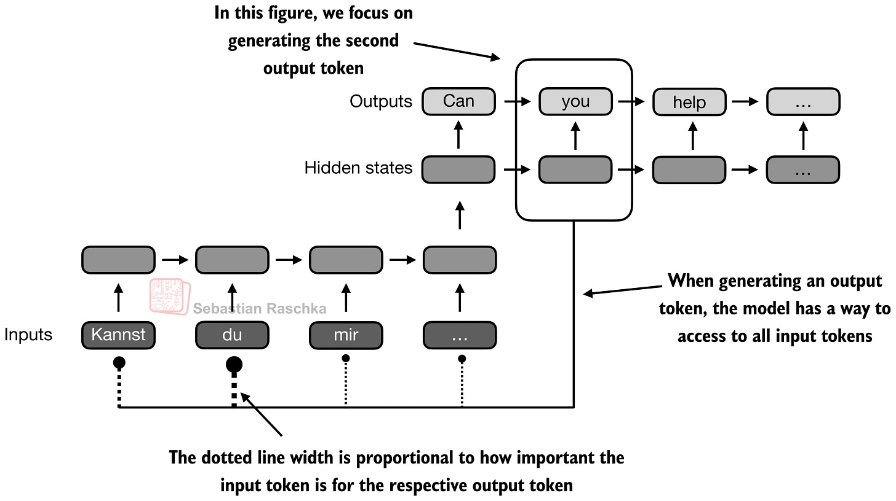
对于长度为T的序列，注意力需要每个token一行权重，因此整体得到一个T×T矩阵。
每一行回答一个简单问题：更新这个token时，各个可见token应该各占多少比重？在仅解码器（decoder-only）的LLM中，未来位置被掩码屏蔽，所以矩阵右上部分在图中被置灰。

自注意力的本质，就是在因果掩码下学习这些token-to-token的权重模式，再用它们构建带上下文的token表征。
下图展示了Transformer如何从输入嵌入X计算出注意力矩阵A，再据此生成变换后的输入Z。
这里Q、K、V分别代表查询（query）、键（key）、值（value）。一个token的query代表它在找什么；key代表每个token对外暴露的、用于匹配的内容；value代表一旦注意力权重算出来、会被混进输出的信息。
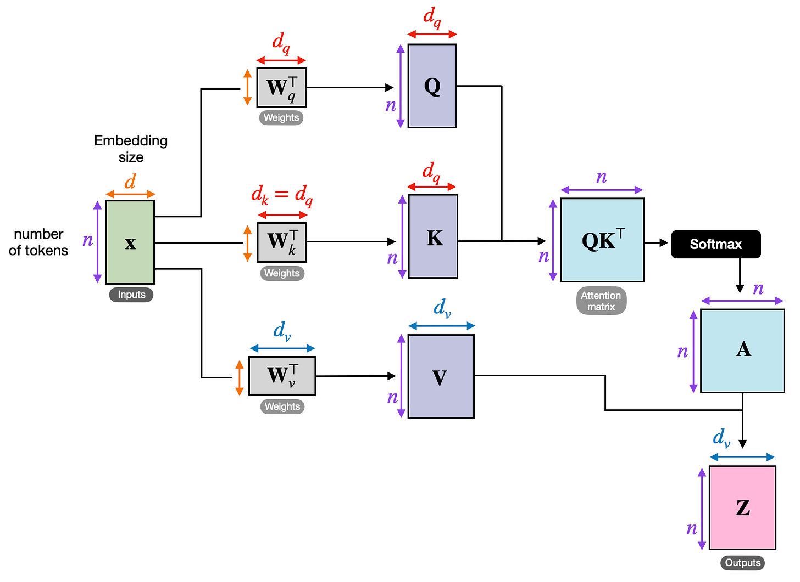
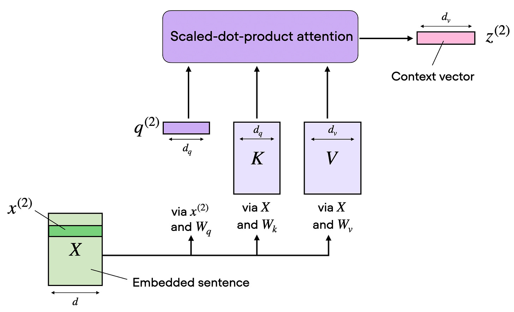
步骤依次是：Wq/Wk/Wv将输入嵌入投影成Q/K/V；QK^T得到原始token-to-token相关性分数；softmax把这些分数归一化成上一节讨论的注意力矩阵A；最后把A作用到V上得到输出矩阵Z。注意，注意力矩阵不是手写对象，它由Q、K和softmax自然涌现。
下一张图与上一图表达同一概念，但把注意力矩阵计算藏进了「缩放点积注意力」框内，并且只针对单个输入token计算——这是为了在扩展到多头之前，先展示单头自注意力的紧凑形式。
一组Wq/Wk/Wv矩阵给我们一个注意力头，也就是一个注意力矩阵和一个输出矩阵Z。
多头注意力只是用不同的可学习投影矩阵并行运行若干个这样的头。这很有用，因为不同头可以专长于不同的token关系：一个头可能关注局部短依赖，另一个关注更宽的语义关联，还有一个关注位置或句法结构。
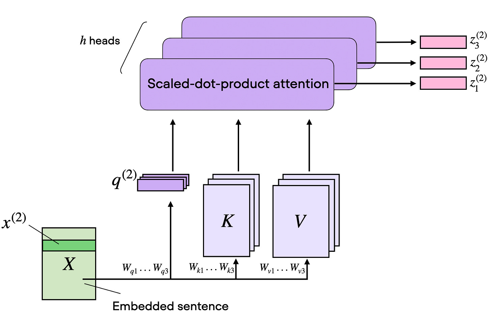
分组查询注意力是从标准MHA派生出的一种变体，由Joshua Ainslie等人在2023年论文《GQA: Training Generalized Multi-Query Transformer Models from Multi-Head Checkpoints》中提出。

它不给每个查询头各自配备独立的键和值，而是让多个查询头共享同一套键-值投影，这让KV缓存便宜很多（主要是内存层面的降低），同时几乎不改变整体解码流程。
在Raschka的架构对比文章里，他把GQA定位为经典多头注意力（MHA）的新标准替代品。原因是标准MHA给每个头都配独立KV，从建模角度看更优，但推理时要把所有这些状态留在KV缓存里，代价高昂。
在GQA中，我们保留更大的查询头集合，但减少键-值头的数量，让多个查询共享它们。这同时降低了参数量和KV缓存流量，又不必像后面要讲的MLA那样做大刀阔斧的实现改动。
实践中，这让GQA成为那些想要比MHA更便宜、又比MLA这类重度压缩新方案更好实现的实验室的非常受欢迎的选择。
GQA带来了KV存储上的巨大节省，因为每层保留的键-值头越少，每个token所需的缓存状态就越少——这正是序列长度越长GQA越有用的原因。
GQA也是一个连续谱：如果一路减到只剩一个共享的K/V组，实际上就进入了多查询注意力（multi-query attention）领域，更便宜但更明显地伤害建模质量。甜点通常在多查询注意力（1个共享组）和MHA（K/V组数等于查询数）之间——缓存节省大，但相对MHA的建模退化保持温和。
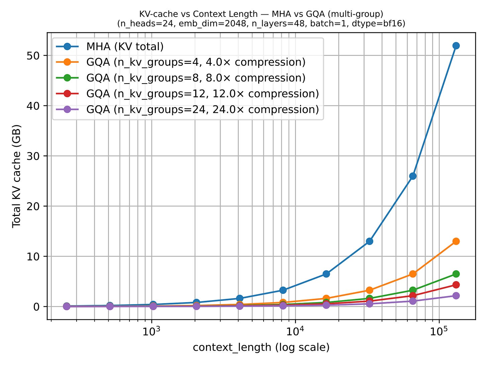
像MLA这样更先进的变体正变得流行，因为它们能在相同KV效率水平下提供更好的建模表现（例如DeepSeek-V2论文的消融研究所述），但它们也带来更复杂的实现和更复杂的注意力栈。
GQA依然吸引人，是因为它稳健、更易实现，也更易训练（基于Raschka的经验，需要调的超参更少）。正因如此，一些较新的发布仍刻意保持经典：例如MiniMax M2.5和Nanbeige 4.1只用分组查询注意力，不堆其他效率技巧。Sarvam是个特别有用的对比点——30B模型保留经典GQA，而105B版本切换到MLA。
多头潜在注意力（MLA）的动机与分组查询注意力（GQA）相似：两者都是为降低KV缓存内存需求而生。区别在于，MLA是通过压缩「所存储的内容」来缩小缓存，而不是通过「减少所存储的K/V数量（共享头）」来缩小。
MLA最初在DeepSeek-V2论文中提出，后来成为定义DeepSeek时代的一个标志性思想（尤其在V3和R1之后）。它比GQA实现更复杂、部署也更麻烦，但如今一旦模型规模和上下文长度大到缓存流量开始主导，它往往在同等内存削减率下能保持更好的建模表现。
与MHA和GQA缓存全分辨率键、值张量不同，MLA存储一个潜表示（latent representation），并在需要时重建可用状态。本质上，它是嵌入在注意力内部的一种缓存压缩策略。
下图展示了相对于常规MHA的节省。

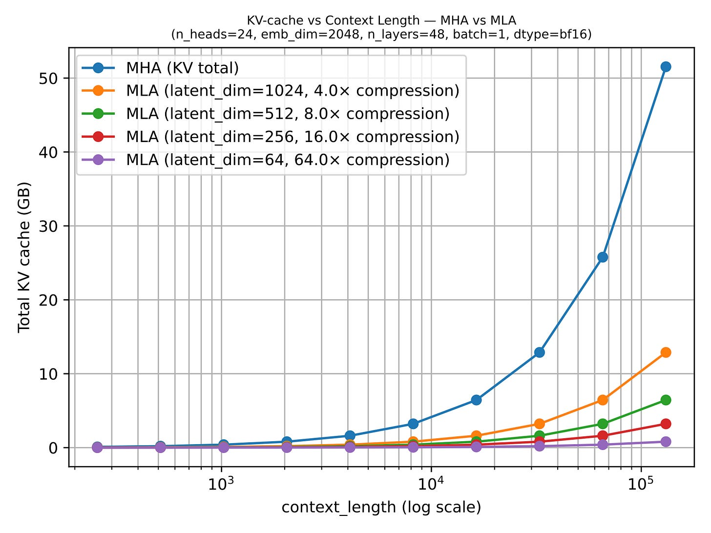
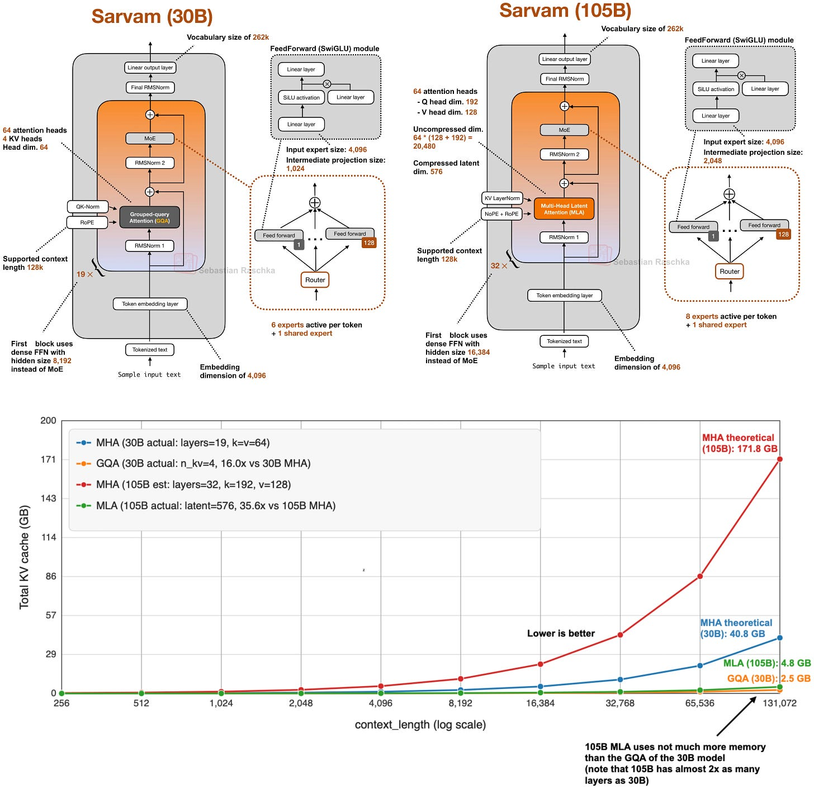
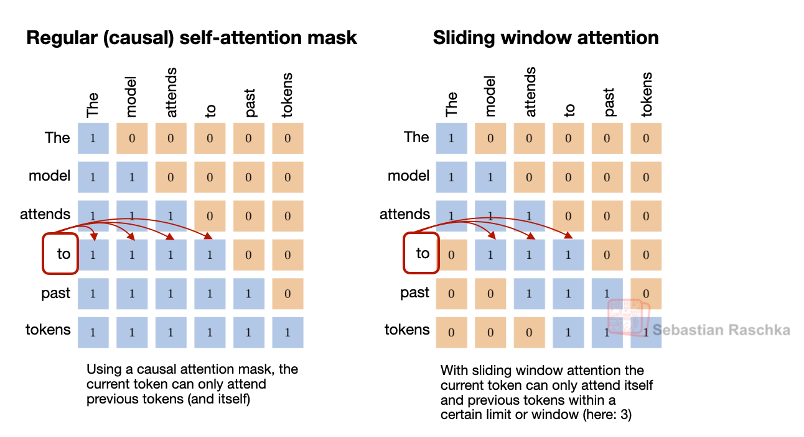
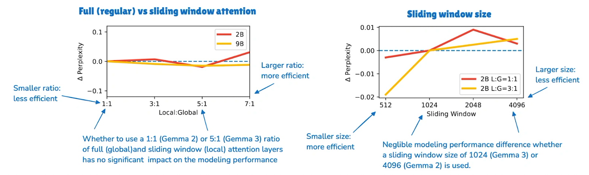
DeepSeek-V2论文提供了一些消融实验：在建模表现上GQA看起来比MHA差，而MLA保持得好得多，精心调参后甚至能超过MHA。这比「（也）省内存」是更有力的理由。
换句话说，对DeepSeek而言MLA是更优的注意力机制，不仅因为它高效，更因为它在大规模下看起来是一个「保质量」的效率动作。（不过同行也告诉Raschka，MLA只在某个规模以上才表现好；对较小的模型——比如说<100B——GQA似乎更好，或者至少更容易调对。）
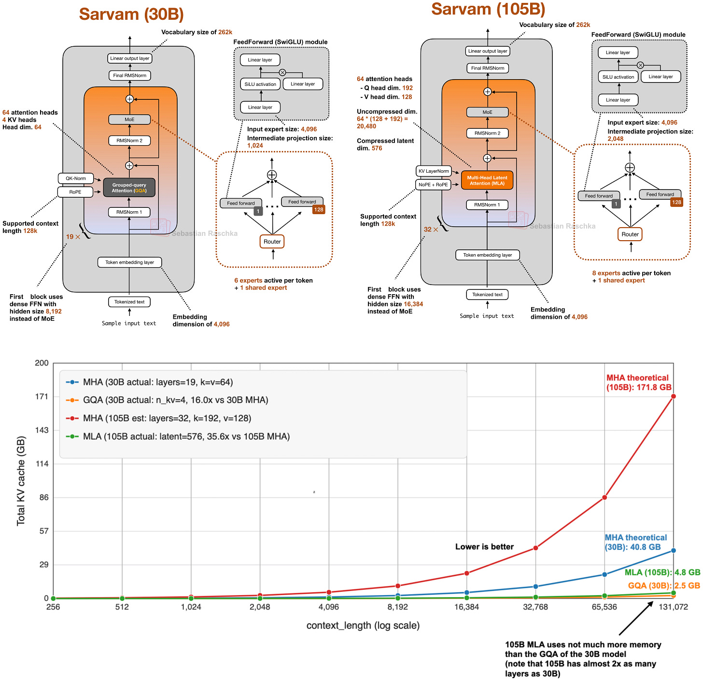
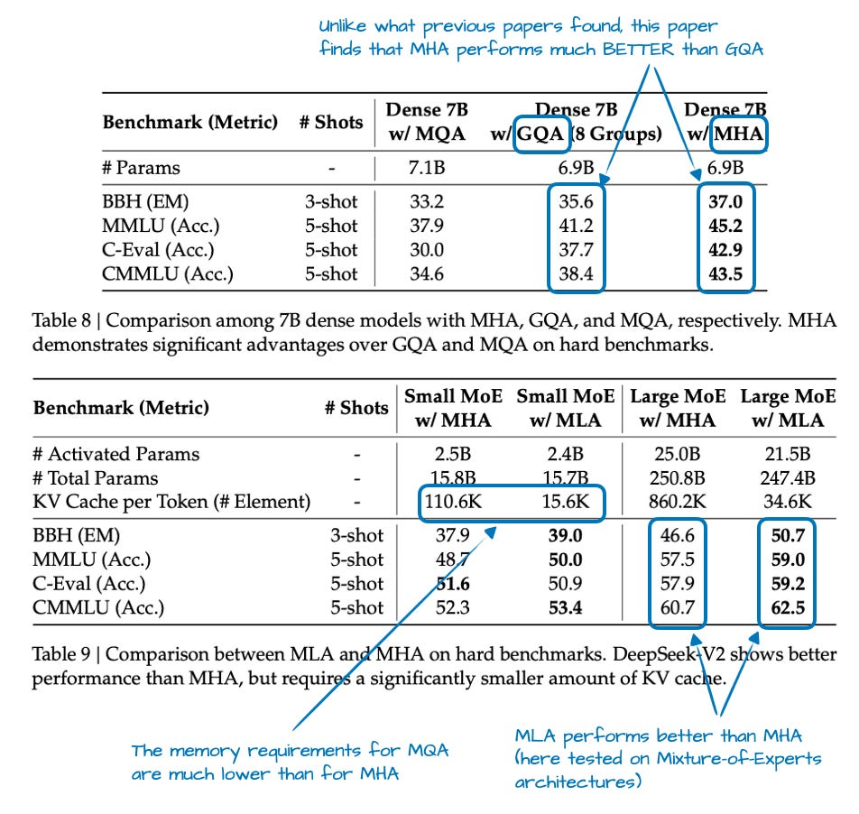
下面再次给出30B Sarvam的GQA与105B Sarvam的MLA之间的对比。
在V2引入、V3/R1/V3.1等将其常态化之后，MLA开始出现在第二波架构中。Kimi K2保留了DeepSeek配方并将其放大。GLM-5把MLA与DeepSeek稀疏注意力（来自V3.2）结合。Ling 2.5把MLA与线性注意力混合搭配。Sarvam发布的两个模型中，30B保留经典GQA、105B切换到MLA。
最后那一对特别有用，因为它把「技术复杂度」讨论搁在了一边：Sarvam团队两种变体都实现了，并有意选择在一个变体上用GQA、另一个上用MLA。所以在某种意义上，这让MLA不再像一个理论替代方案，而更像一条具体的架构升级路径——一旦某个家族规模扩大。
滑动窗口注意力通过限制每个位置能关注多少「之前的token」，来降低长上下文推理的内存与计算成本。每个token不再关注整个前缀，而只关注其位置附近一个固定窗口内的token。由于注意力被限制在局部token邻域，这种机制常被称为局部注意力（local attention）。
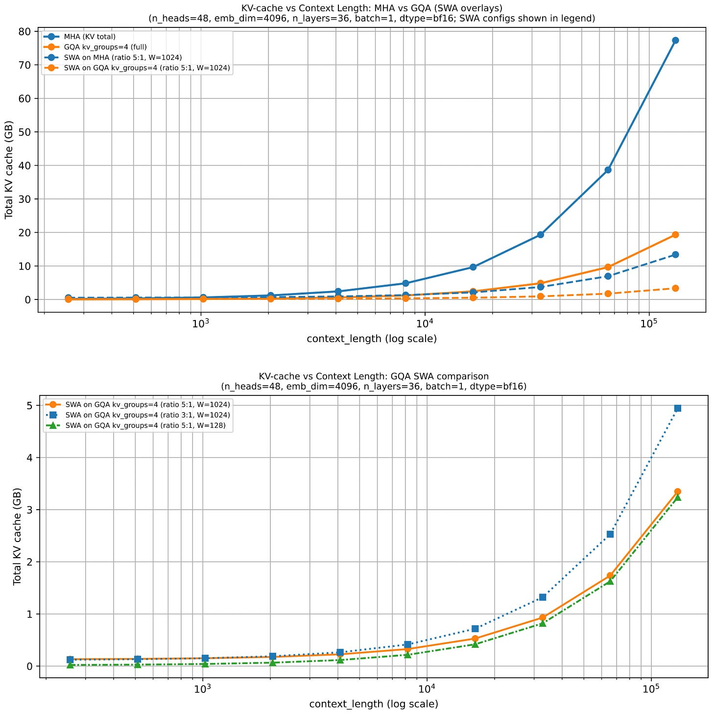
一些架构把这些局部层与偶发的全局注意力层结合，使信息仍能跨越整个序列传播。
Gemma 3仍是近期最清晰的SWA例子之一，因为它很容易与Gemma 2对比。Gemma 2已经用了混合注意力设置：局部层与全局层1:1的比例，窗口4096 token。Gemma 3进一步把比例推到5:1，并把窗口缩小到1024。
关键发现不在于局部注意力更便宜（这点早已知道），更有趣的收获来自Gemma 3的消融研究：更激进地使用它，似乎只轻微伤害建模表现。
实践中，说一个模型「用了SWA」并不意味着它只靠SWA。通常重要的是局部-全局层模式以及注意力窗口大小。例如：Gemma 3和Xiaomi用5:1的局部-全局模式；OLMo 3和Arcee Trinity用3:1模式；Xiaomi还用了128的窗口大小，比Gemma的1024小得多、因此更激进。SWA本质上是一个可以调得更激进或更温和的旋钮。
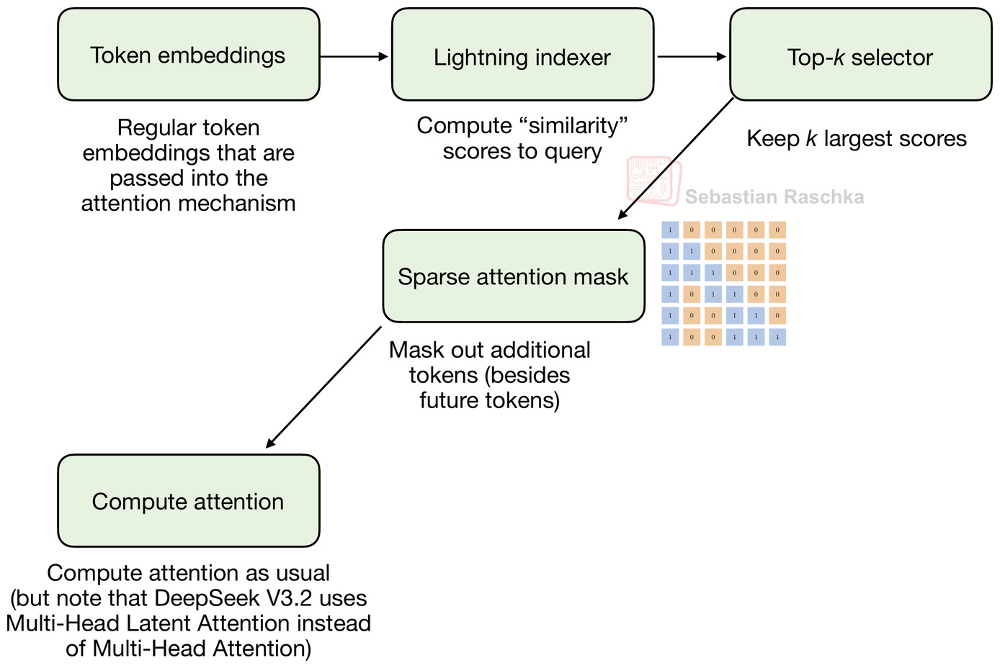
SWA经常与GQA一同出现，因为两个思想解决的是同一推理问题的不同部分。SWA减少一个局部层需要考虑多少上下文；GQA减少每个token贡献给缓存的键-值状态有多少。
这就是为什么许多近期稠密模型两者都用，而不是把它们当替代方案。Gemma 3又是个好参照点：它把滑动窗口注意力与分组查询注意力放在了同一架构里。
DeepSeek稀疏注意力是出现在DeepSeek V3.2系列、后来又在GLM-5中重现的架构改动之一。
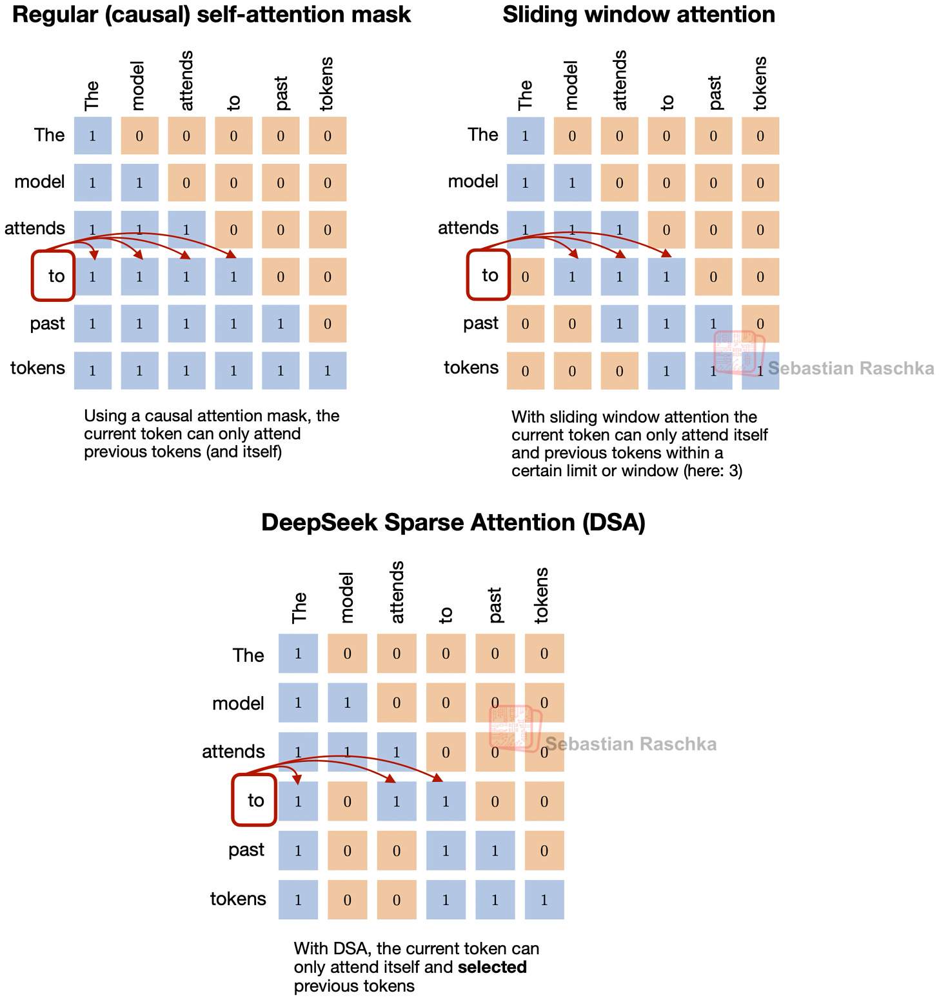
具体来说，DeepSeek V3.2把DSA与多头潜在注意力（MLA）结合；GLM-5出于同样的总体原因（即在上下文长度变大时降低推理成本）采用了同一对组合。
在滑动窗口注意力中，当前token不关注整个前缀，只关注一个固定的局部窗口。这与DeepSeek稀疏注意力的宽泛思想相同——每个token也只关注之前token的一个子集。
然而，被选中的token不是由固定宽度的局部窗口决定的。DeepSeek稀疏注意力使用一种「学到的稀疏模式」。简而言之，它用一个「索引器+选择器」的设置：一个轻量的索引器计算相关性分数，一个token选择器只保留得分较高的较小一组过去位置。
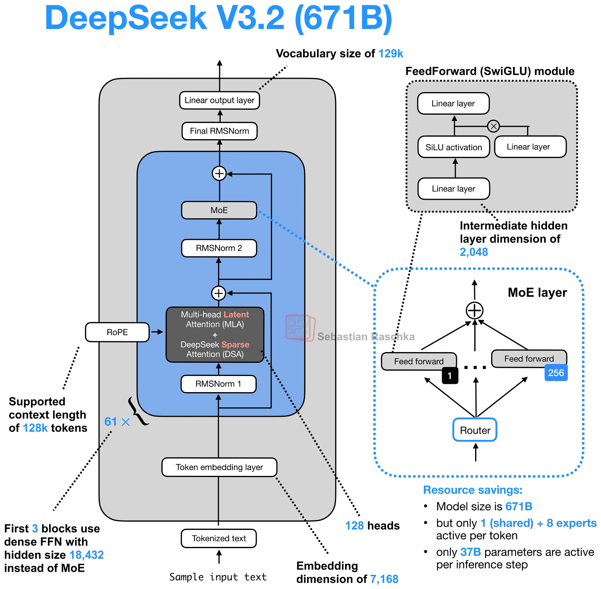
子集的选择方式，正是它与滑动窗口注意力的根本区别。滑动窗口注意力把局部性硬编码；DeepSeek稀疏注意力仍把注意力限制在子集内，但让模型自己决定哪些先前token值得重访。
DeepSeek V3.2同时使用了多头潜在注意力（MLA）和DeepSeek稀疏注意力。MLA通过压缩所存储的内容来降低KV缓存成本；DSA降低模型必须重访的先前上下文的量。换句话说，一个优化缓存表示，另一个在其之上优化注意力模式。
稀疏模式不是随机的。第一阶段是一个轻量索引器，为每个新查询token对先前token打分——它利用MLA压缩后的token表示，在先前上下文上计算一个学到的相似度分数，让模型能给哪些更早位置值得重访排座次。第二阶段是一个token选择器，只保留一个较小的、高分子集（例如过去位置的top-k集合），并把它变成稀疏注意力掩码。所以重点是：DSA不硬编码稀疏模式，它学习该保留哪些过去token。
DeepSeek稀疏注意力相对较新、实现也较复杂，这正是它尚未像GQA那样被广泛采用的原因。
门控注意力最好被理解为一种「改良版的全注意力块」，而非一个独立的注意力家族。
它通常出现在混合栈内部——这些栈仍保留偶尔的全注意力层来做精确内容检索，但在原本熟悉的缩放点积注意力块之上，加了几处面向稳定性的改动。
Qwen3-Next和Qwen3.5架构表明，近期的混合架构（下节讲）并非处处替换注意力，而是用更便宜的替代方案替换大多数注意力层，在栈中保留较少数量的全注意力层。
那些保留下来的全注意力层，正是门控注意力通常出现的地方。Qwen3-Next和Qwen3.5把它与Gated DeltaNet以3:1模式结合使用。但抛开混合架构，Trinity在一个更常规的注意力栈中也用了相关的门控思想。
Qwen式混合或Trinity（非混合）中的门控注意力块，本质上就是标准缩放点积注意力加上几处改动。在原始Gated Attention论文中，这些改动被呈现为让「保留的全注意力层」在混合栈内表现得更可预测的一种方式。
这个块看起来仍像标准（全）注意力，但它增加了：一个输出门，在把注意力结果加回残差之前对其缩放；一个以零为中心的QK-Norm变体（替代q和k的标准RMSNorm）；以及部分RoPE。这些改动不是MLA或线性注意力那种量级的变革，而只是施加在熟悉注意力块上的稳定性与控制性改动。
混合注意力是一个更宽泛的设计模式，而非某个具体的单一机制。总体思想是保留一个Transformer式栈，但用更便宜的线性或状态空间序列模块替换掉大多数昂贵全注意力层。
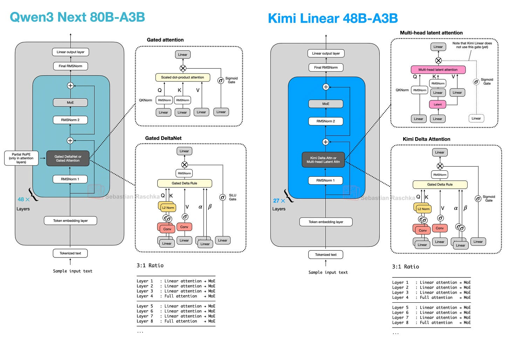
动机是长上下文效率。全注意力随序列长度呈二次增长，所以一旦模型进入128k、256k或1M token的上下文，注意力内存与计算就贵到足以让「在大多数层用更便宜的序列模块、只保留较少数量的较重检索层」开始变得合理。（注意这伴随一定的建模表现权衡。）
在Qwen3-Next中，这个模式表现为Gated DeltaNet与Gated Attention块3:1的混合。Gated DeltaNet也与Mamba-2密切相关（参见《Gated Delta Networks: Improving Mamba2 with Delta Rule》等论文），该机制可解读为「结合Mamba式门控的DeltaNet式快权重更新」。后续架构保留同一总体思想，但换入其他轻量序列混合器，如Kimi Delta Attention、Lightning Attention，或标准Mamba-2。
据Raschka所知，第一个接近旗舰级、采用混合注意力的知名例子是2025年的Qwen3-Next——它没有彻底移除注意力，而是把三个Gated DeltaNet块与一个Gated Attention块混合。
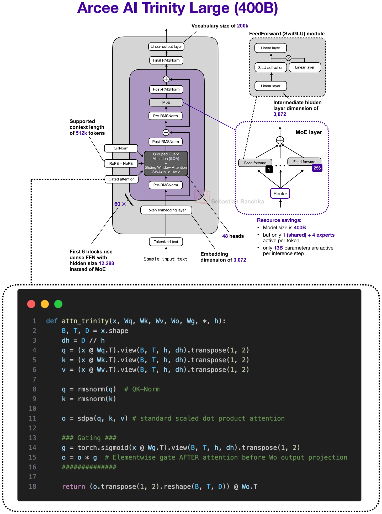
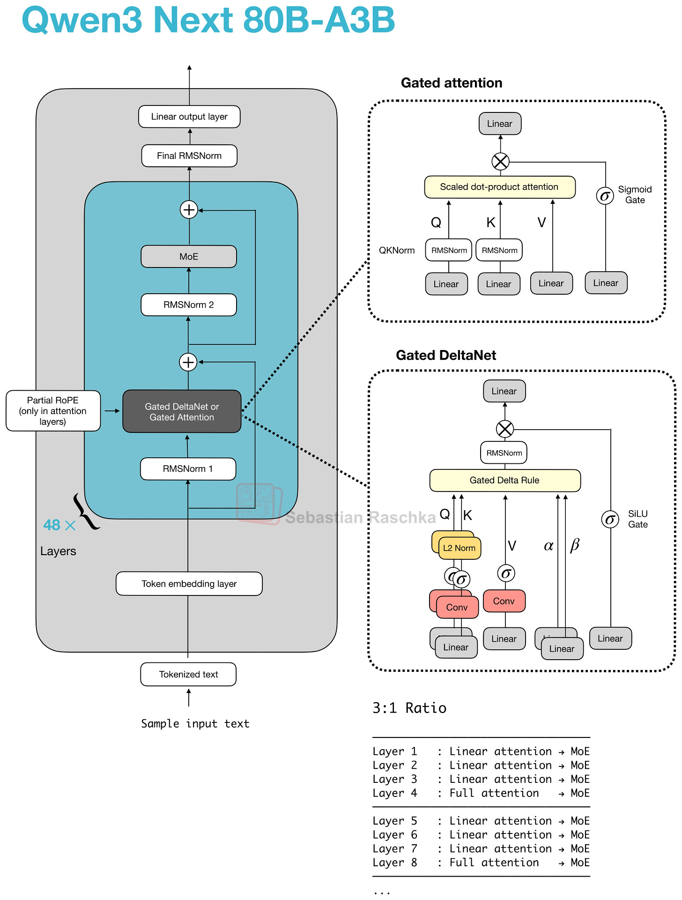
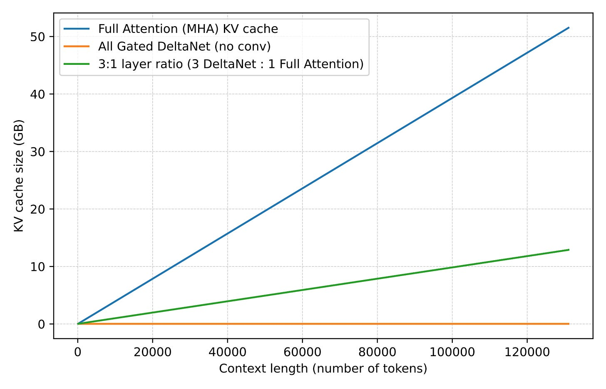
在这里，轻量的Gated DeltaNet块承担大部分长上下文工作，让内存增长比全注意力平坦得多。保留较重的门控注意力层，是因为DeltaNet在基于内容的检索上不够精确。
在Gated DeltaNet块内部，模型计算查询、键、值向量，外加两个可学习门（α, β）。它不是形成常规的token-to-token注意力矩阵，而是用一个delta-rule更新写进一个小的快权重记忆。粗略地说，这个记忆存储过去信息的压缩运行摘要，而门控制新增多少信息、保留多少先前状态。
这让Gated DeltaNet成为线性注意力或递归式机制，而不只是MHA的又一个微调。相对于Mamba-2，紧密的关联在于二者都属于线性时间门控序列模型家族，但Gated DeltaNet用的是DeltaNet式快权重记忆更新，而非Mamba的状态空间更新。
Qwen3.5把此前的Qwen3-Next混合方案搬进了Qwen的主旗舰系列，这是个有意思的举动——基本宣告混合策略成功，未来我们可能会看到更多这种架构的模型。
Kimi Linear保留了同样宽泛的Transformer骨架和同样的3:1模式，但把配方的两半都改了。
在轻量侧，Kimi Delta Attention是Gated DeltaNet的精炼：Qwen3-Next用每个头一个标量门来控制记忆衰减，Kimi用通道级门控（channel-wise gating），对记忆更新给出更细的控制。在较重侧，Kimi把Qwen3-Next的门控注意力层替换为门控MLA层。
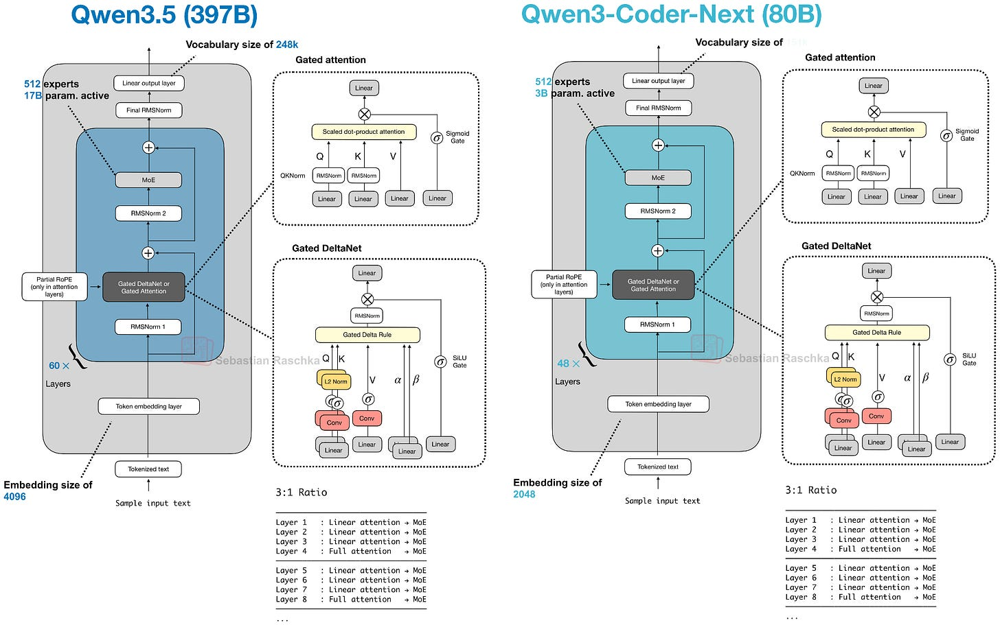
所以它仍是和Qwen3-Next、Qwen3.5同样的宽泛模式，只是两个成分都（轻微）变了：大多数层仍由更便宜的线性式机制处理，周期性的较重层仍保留做更强检索。
Ling 2.5展示了轻量侧的另一种替换：它不用Gated DeltaNet，而是用一种稍简单的递归线性注意力变体，叫Lightning Attention；在较重侧，它保留了DeepSeek的MLA。
大多数序列混合发生在更便宜的线性注意力块中，而较少数量的较重层仍保留以维护更强检索。区别在于具体的轻量机制现在是Lightning Attention，而非DeltaNet或Kimi Delta Attention。
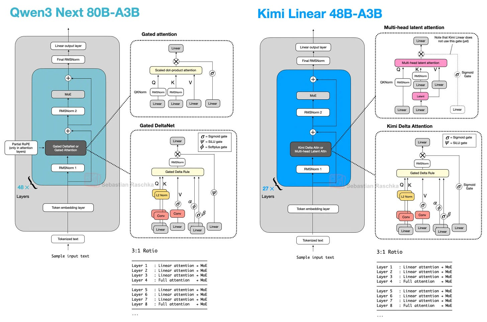
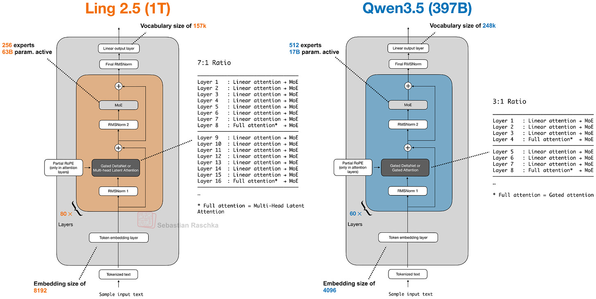
Ling 2.5更瞄准长上下文效率，而非绝对榜单领先。据Ling团队报告，它在32k token上比Kimi K2明显更快——这正是这些混合架构追求的实际回报。
Nemotron把这种模式推得离Transformer基线更远。Nemotron 3 Nano是一个Mamba-Transformer混合体：它把Mamba-2序列建模块与稀疏MoE层交错排列，并且只在很小一部分层中使用自注意力。
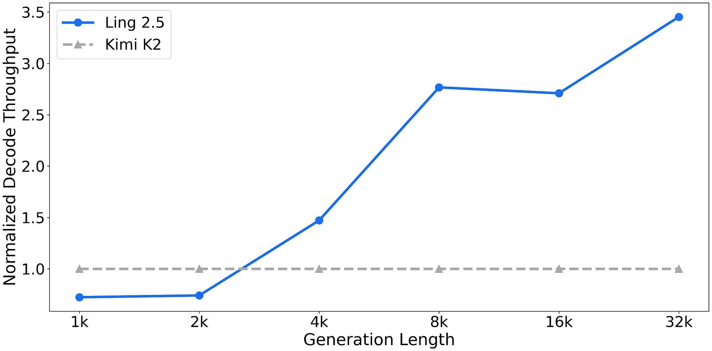

这是上面讨论的同一基本权衡的一个更极端版本。这里的轻量序列模块是Mamba-2状态空间块，而非DeltaNet式快权重更新，但基本权衡相似。
更大的Nemotron 3 Super保留了Mamba-2混合注意力方案，并加入了其他面向效率的改动，如潜MoE（latent MoE）和用于投机解码的共享权重多token预测（MTP）。
当然，文献中还有更多（大多小众的）注意力变体本文没有覆盖，本文聚焦的是当前最先进（开源权重）模型中真正在用的那些。
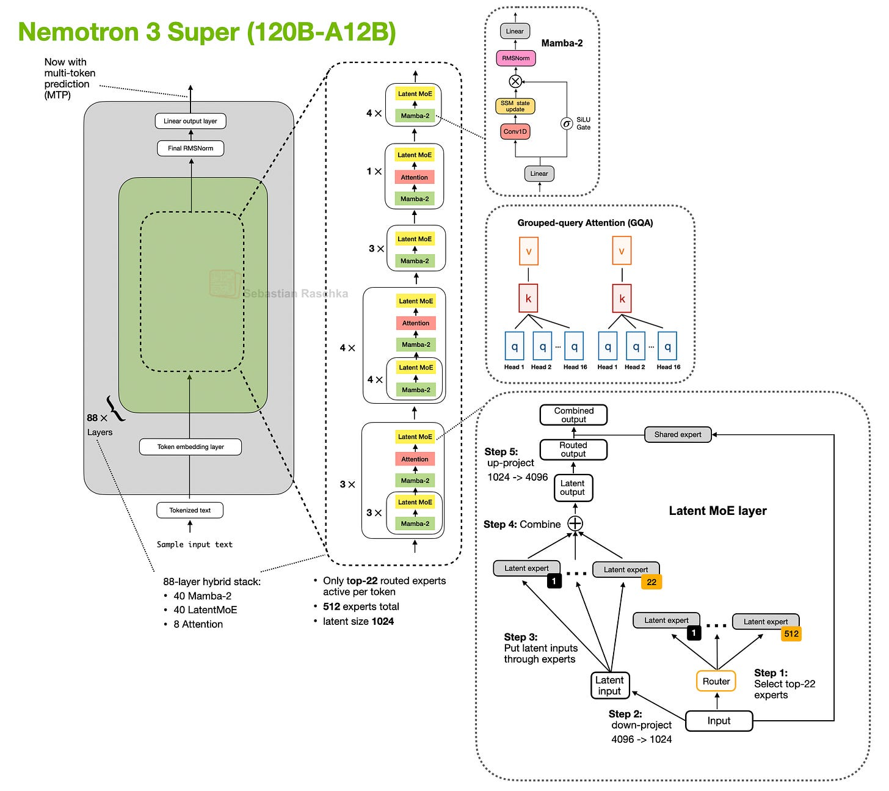
Raschka特别期待两件事：(1) 全新的Mamba-3层被整合进上述混合架构（替代Gated DeltaNet）；(2) 注意力残差在更普遍意义上被使用。
至于「当下最佳架构是什么」，这很难回答——因为没有公开实验在不同架构上用相同训练数据训练。所以我们目前只能回答「针对某个给定问题，最佳（已训练）模型选择是什么」。在Raschka看来，混合架构仍是新事物，主要卖点是（长上下文）效率而非纯粹建模表现；因此他认为它们是智能体场景（如OpenClaw）的有力候选。
他个人觉得混合架构的问题还在于推理栈尚不够优化，本地跑LLM时他用更经典的配置（如带GQA的GPT-OSS）能获得更好的tok/sec吞吐。最后，他好奇DeepSeek V4会带来什么——毕竟近两年来DeepSeek是相当可靠的趋势引领者。
参考：https://magazine.sebastianraschka.com/p/visual-attention-variants